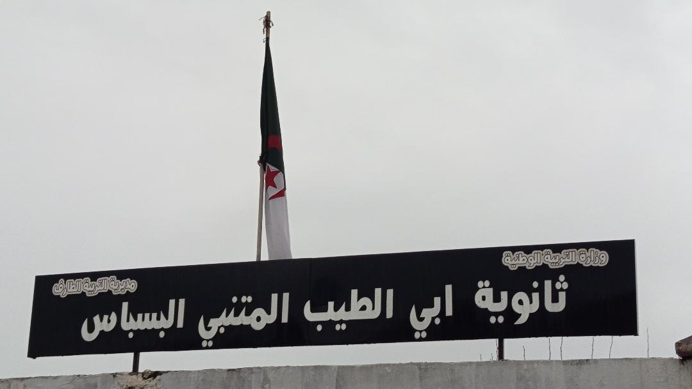
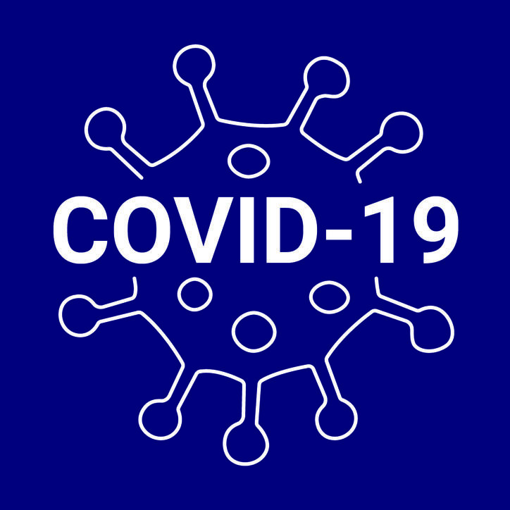
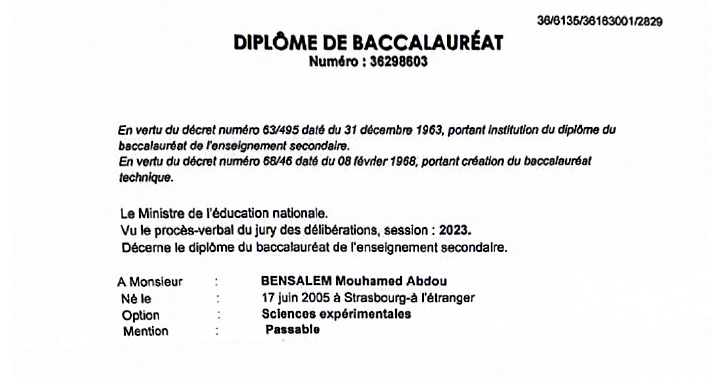
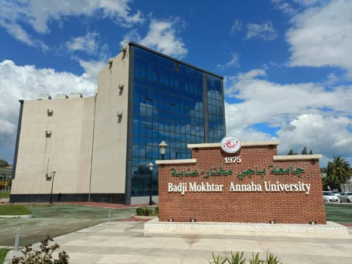
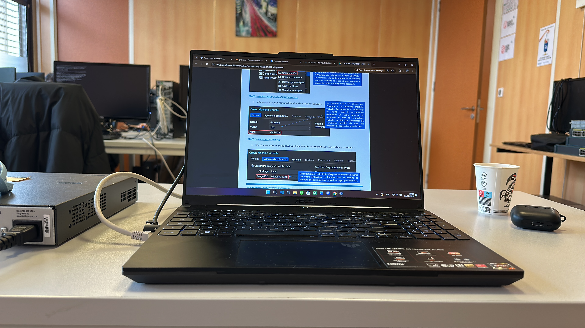
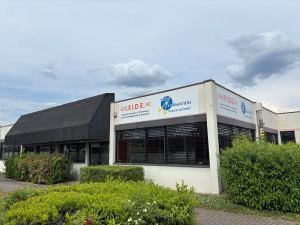
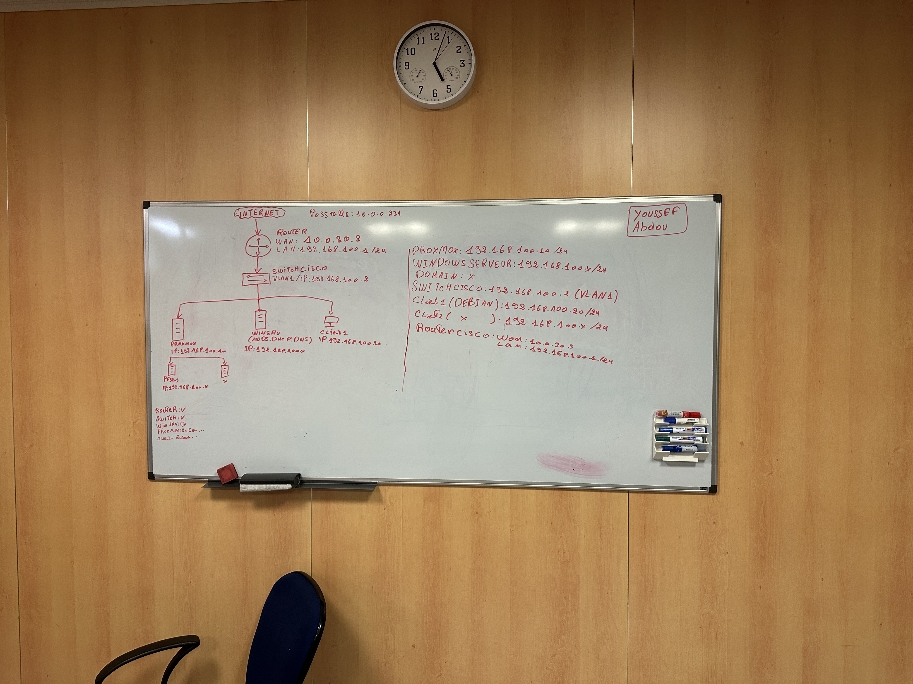

Cursus Scientifique
Objectif initial : Mécanique.
2021 : Cursus Scientifique
Cursus scientifique au lycée en Génie Mécanique. Choix motivé par une volonté de poursuivre des études supérieures dans les domaines de l'ingénierie.

Transition Académique
Orientation en Sciences Expérimentales.
2022 : Sciences Expérimentales
Orientation en Sciences Expérimentales suite à une décision administrative liée aux contraintes sanitaires (COVID-19) et aux effectifs restreints en Mécanique.

Baccalauréat
Obtention du diplôme de fin d'études.
2023 : Baccalauréat
Poursuite du cursus en Sciences Expérimentales et obtention du Baccalauréat.

Sciences & Technologies
Début universitaire et réévaluation.
2024 : Université (ST)
Début de cursus universitaire en Sciences et Technologies (ST). Réévaluation du projet professionnel et décision de réorientation stratégique vers le domaine IT.

BTS SIO
Début du BTS SIO en France.
2024 : BTS SIO (IFIDE)
Mobilité internationale vers la France pour intégrer le BTS SIO. Une nouvelle carrière en Informatique (Computer Science) qui correspond pleinement à mes aspirations.

STAGE
Première expérience technique (Atelier).
2025 : Projet d'Initiation Matériel
Première intervention technique sur matériel physique en atelier. Réalisation de recherches approfondies, phases de tests et mise en pratique technique réussie.

BTS SIO SISR
Spécialisation Infrastructure & Réseaux.
2026 : Spécialisation SISR
Orientation vers l'option SISR (Solutions d’Infrastructure, Systèmes et Réseaux). Un choix motivé par l'intérêt pour l'architecture réseau.

Stage - Projet Cisco
Conception d'une infrastructure complète.
2026 : Infrastructure Cisco WIFI
Réalisation d'un projet majeur en laboratoire : conception et déploiement d'une infrastructure CISCO WIFI. Mise en œuvre de compétences avancées.